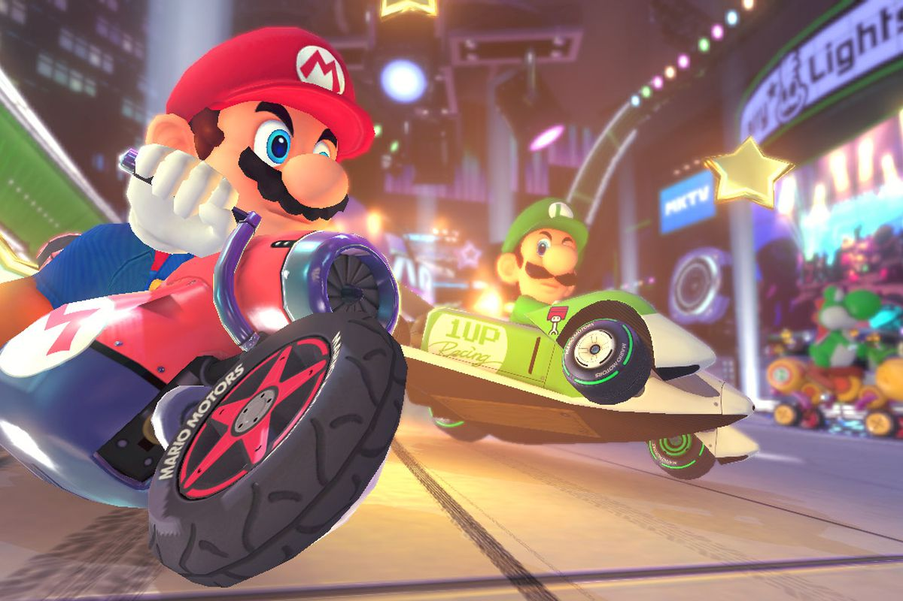
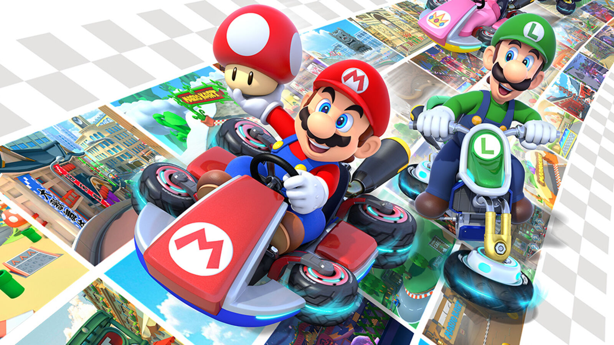
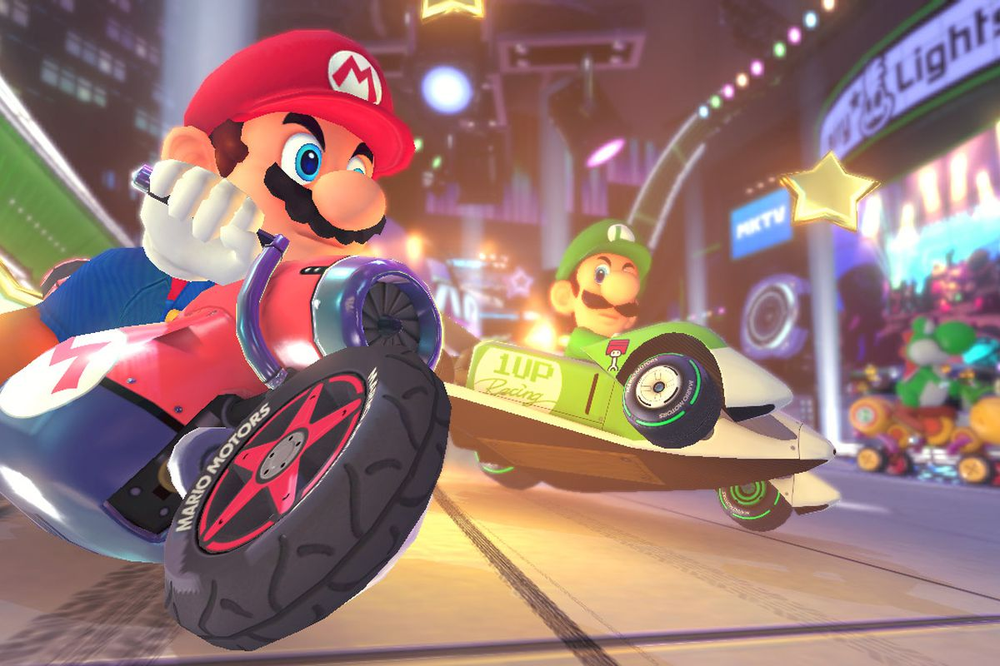
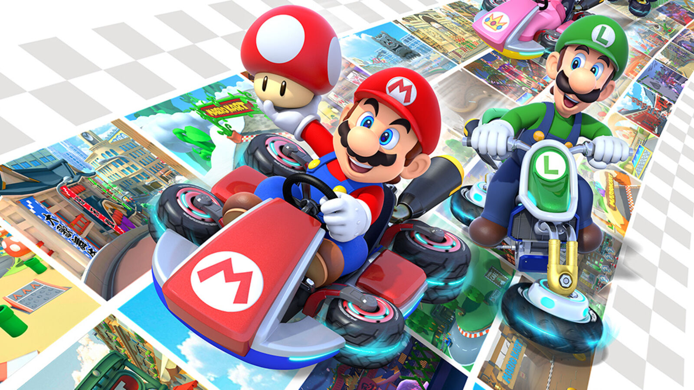

Es un videojuego de carreras desarrollado y publicado por Nintendo para la consola Wii U. Es la undécima entrega de la serie Mario Kart, octava en consolas de Nintendo.
Mario Kart 8 Deluxe regresa a todos los personajes de Mario Kart 8, incluidos los personajes DLC. Adicionalmente, Mario Kart 8 Deluxe incluye nuevos personajes que no están presentes en anteriores versiones, incluyendo algunos veteranos que no hicieron su aparición en Mario Kart 8 . Los nuevos personajes incluyen más personajes de la saga Mario, y otros que no son de la Saga, son los Inklings de Splatoon . Los jugadores pueden elegir el niño o niña Inkling, e incluyen varios colores seleccionables. En el juego habrá un total de 42 personajes jugables, el número más alto de la franquicia hasta ahora.
Mario Kart Deluxe 8 cuenta con diferentes modos de juego como: Grand Prix, Contrarreloj, Carrera VS, Multijugador en línea, Mario Kart TV, Modo Inalámbrico y Modo Batalla.